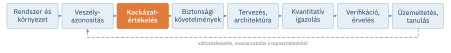
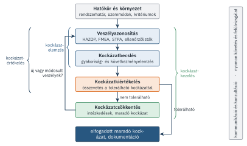
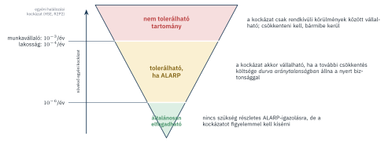
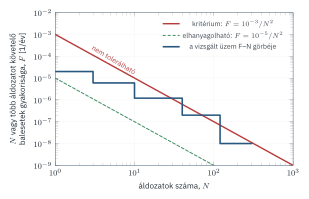
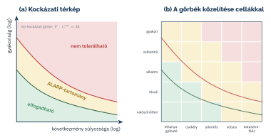
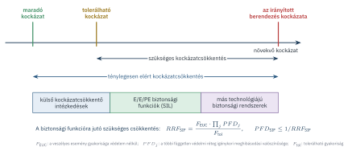
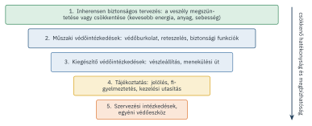

3. Kockázatértékelés és a kockázat elfogadhatósága

A veszélyek azonosítása után két kérdésre kell válaszolni: mekkora a kockázat, és elfogadható-e. Az első kérdés mérnöki becslés, a második társadalmi, jogi és szervezeti értékítélet. Ez a fejezet a kockázatkezelés folyamatával kezdődik, majd bemutatja a kockázat elfogadhatóságának nemzetközileg használt kritériumait (ALARP, GAMAB, MEM, F–N görbe). Részletesen tárgyalja a gyakorlatban legelterjedtebb, de sokszor rosszul használt eszközt, a kockázati mátrixot. Végül azt mutatja meg, hogyan lesz a kockázatértékelés eredményéből a biztonsági funkciókra kiosztható, számszerű kockázatcsökkentési követelmény.
A fejezet végére képes leszel
- leírni a kockázatkezelés folyamatát és fogalmait (kockázatelemzés, -kiértékelés, -értékelés, -kezelés);
- alkalmazni az ALARP-elvet, és megkülönböztetni a nem tolerálható, a tolerálható és az általánosan elfogadható kockázati tartományt;
- egyéni és társadalmi kockázatot számolni, és F–N görbét értelmezni;
- következetes kockázati mátrixot tervezni és kalibrálni, valamint felismerni a mátrixok tipikus hibáit;
- a tolerálható kockázatból meghatározni a szükséges kockázatcsökkentést.
3.1. A kockázatkezelés folyamata
A kockázatkezelés (risk management) a kockázatok azonosítására, elemzésére, kiértékelésére és kezelésére irányuló tevékenységek összehangolt rendszere. Általános kerete az ISO 31000 (ISO 2018), a módszerek tárháza az IEC 31010 (IEC 2019), a biztonsági szabványok pedig ugyanezt a folyamatot követik a saját fogalmaikkal (3.1. ábra).

- Kockázatelemzés (risk analysis): a rendelkezésre álló információ módszeres felhasználása a veszélyek azonosítására és a kockázat becslésére.
- Kockázatbecslés (risk estimation): a kockázat mértékének meghatározása gyakoriság- és következményelemzéssel.
- Kockázatkiértékelés (risk evaluation): a becsült kockázat összevetése a kockázati kritériumokkal, annak eldöntésére, hogy a kockázat tolerálható-e.
- Kockázatértékelés (risk assessment): a kockázatelemzés és a kockázatkiértékelés együttese.
- Kockázatcsökkentés, kockázatkezelés (risk reduction, risk treatment): intézkedések kiválasztása és megvalósítása a kockázat csökkentésére, majd a maradó kockázat újbóli értékelése.
A folyamat nem egyszeri, hanem iteratív. Egy kockázatcsökkentő intézkedés (például egy új védelmi funkció) maga is új veszélyeket hozhat (téves leállítás, karbantartási hibák), ezért az elemzést meg kell ismételni. A folyamatos kockázatkezelés (continuous risk management, CRM) a projektmenedzsmentben is elterjedt formában hat lépés ismétlődő ciklusaként írja le ezt: azonosítás, elemzés, tervezés, nyomon követés, beavatkozás, és minden lépést kísérő kommunikáció és dokumentálás (Goldberg és mtsai. 1994). A dokumentálás nem adminisztratív teher: a kockázatértékelés eredménye a biztonsági érvelés (17. fejezet) egyik legfontosabb bizonyítéka.
3.1.1. Kvalitatív, félkvantitatív és kvantitatív értékelés
A kockázatbecslés pontossága és ráfordítása széles skálán mozog:
- a kvalitatív értékelés szóbeli kategóriákkal dolgozik (például „ritka”, „súlyos”), gyors és átfogó, de szubjektív;
- a félkvantitatív értékelés a kategóriákhoz számtartományokat (például gyakoriság-nagyságrendeket) rendel, így következetesebb és ellenőrizhetőbb. Ilyen a kockázati mátrix kalibrált formája és a LOPA (11. fejezet);
- a kvantitatív kockázatelemzés (quantitative risk assessment, QRA) a gyakoriságokat és a következményeket modellekkel (hibafa, eseményfa, terjedési és hatásmodellek) számolja, és egyéni, illetve társadalmi kockázati mutatókat ad.
A jó gyakorlat a fokozatosság: kvalitatív szűréssel kezdünk, és a nagy vagy bizonytalan kockázatú forgatókönyveket vizsgáljuk egyre részletesebben.
3.2. Mikor elfogadható a kockázat?
A tolerálható kockázat meghatározása nem tisztán mérnöki feladat. A társadalom a kockázatot nem csak a várható kár nagysága szerint ítéli meg: más a viszonya az önként vállalt (autóvezetés) és a kényszerűen elszenvedett (egy veszélyes üzem közelében lakás), az ismert és az új, a megszokott és a katasztrofális kockázathoz. 2012-ben Magyarországon 541-en haltak meg közúti balesetben, mégis naponta milliók közlekednek, vagyis a társadalom ezt a kockázatot a gyakorlatban elfogadja. Ugyanez a szám egy ipari létesítmény esetén elképzelhetetlen volna. A mérnöki gyakorlat ezért néhány jól definiált, nemzetközileg elterjedt kritériumrendszert használ.
3.2.1. Az ALARP-elv
Az egyesült királysági munkavédelmi hatóság (HSE) Reducing Risks, Protecting People (R2P2) című kiadványa fogalmazta meg a ma legszélesebb körben használt keretrendszert, a kockázat tolerálhatóságának modelljét (Health and Safety Executive 2001). A kockázati teret három tartományra osztja (3.2. ábra):
- Nem tolerálható tartomány: a kockázat csak rendkívüli körülmények között vállalható, mértékétől függetlenül csökkenteni kell.
- Tolerálható tartomány, ha ALARP: a kockázat akkor vállalható, ha „ésszerűen megvalósítható módon a lehető legkisebb” (As Low As Reasonably Practicable, ALARP). Ez azt jelenti, hogy a további kockázatcsökkentés költsége (pénzben, időben, erőfeszítésben) durva aránytalanságban (gross disproportion) állna az elérhető biztonsági előnnyel.
- Általánosan elfogadható tartomány: a kockázat olyan kicsi, hogy nincs szükség részletes ALARP-igazolásra, de a kockázatot továbbra is figyelemmel kell kísérni.

A HSE irányértékei az egyéni halálozási kockázatra: a nem tolerálható és a tolerálható tartomány határa munkavállalókra évi \(10^{-3}\), a lakosságra évi \(10^{-4}\); az általánosan elfogadható tartomány felső határa mindkét csoportra évi \(10^{-6}\). Ezek irányértékek, nem jogszabályi határok, de a nemzetközi gyakorlatban (és sok vállalati kockázati kritériumrendszerben) referenciaként szolgálnak.
A rövidítést gyakran hibásan „As Low As Reasonably Possible” formában oldják fel; ez a hiba a könyv 2014-es elődjében is szerepelt. A különbség nem szőrszálhasogatás. A practicable (megvalósítható) azt jelenti, hogy a kockázatcsökkentés költségét és hasznát mérlegelni kell, és az intézkedés csak akkor hagyható el, ha a költség durván aránytalan a haszonhoz képest. A bizonyítási teher a kockázatot létrehozón van: neki kell igazolnia, hogy minden ésszerűen megvalósítható intézkedést megtett. A rokon brit jogi fogalom a SFAIRP (So Far As Is Reasonably Practicable).
Az ALARP-igazolás gyakran költség–haszon elemzéssel történik. Ha egy intézkedés \(\Delta R\) kockázatcsökkentést (például évi várható halálesetszám-csökkenést) eredményez \(T\) év élettartam alatt, és költsége \(K\), akkor az intézkedés kötelező, ha
\[ K < d \cdot \Delta R \cdot T \cdot V_{\mathrm{VPF}}, \tag{3.1}\]
ahol \(V_{\mathrm{VPF}}\) egy statisztikai haláleset megelőzésének értéke (value of preventing a fatality), \(d \ge 1\) pedig az aránytalansági tényező. Ez utóbbi a kockázat nagyságával nő: a nem tolerálható határhoz közel 10 is lehet. Az összefüggés a döntést segíti, de nem helyettesíti a mérnöki és etikai mérlegelést.
3.2.2. Más kritériumrendszerek: GAMAB és MEM
A vasúti szabványok (EN 50126 (CENELEC 2017)) két további elvet is ismernek:
- GAMAB (Globalement Au Moins Aussi Bon, francia eredetű): egy új rendszer összességében legalább olyan biztonságos legyen, mint az általa kiváltott, már elfogadott rendszer. Az elv az összehasonlítás alapját egy ismert referenciában keresi.
- MEM (Minimale Endogene Mortalität, német eredetű): a legalacsonyabb természetes halálozási arány (a fejlett országokban a fiatal korosztálynál nagyjából évi \(2\cdot 10^{-4}\)) ne nőjön meg érzékelhetően egy technikai rendszer miatt. Egyetlen rendszer egyéni kockázata tipikusan ennek legfeljebb 5%-a, azaz évi \(10^{-5}\) lehet.
A három elv más-más kérdésre ad választ (mennyire csökkentsük, legyen legalább olyan jó, ne növelje érdemben az alapkockázatot), de a gyakorlatban hasonló nagyságrendű kritériumokhoz vezetnek.
3.2.3. Egyéni kockázat
Az egyéni kockázat (individual risk per annum, IRPA) egy meghatározott személy évi halálozási valószínűsége a vizsgált tevékenység miatt. Ha az \(i\)-edik veszélyes forgatókönyv gyakorisága \(F_i\), a halálos kimenetel feltételes valószínűsége \(P_{\mathrm{h},i}\), a személy jelenlétének valószínűsége pedig \(P_{\mathrm{j},i}\), akkor
\[ \text{IRPA} = \sum_i F_i \, P_{\mathrm{h},i} \, P_{\mathrm{j},i} . \tag{3.2}\]
Egy kezelő a műszakja alatt a ReaktorVéd reaktorcsarnokában az idő 25%-át tölti, a többit a vezérlőteremben. Három forgatókönyvet vizsgálnak:
| Forgatókönyv | \(F_i\) [1/év] | \(P_{\mathrm{h},i}\) | \(P_{\mathrm{j},i}\) | hozzájárulás [1/év] |
|---|---|---|---|---|
| reaktor felhasadása megfutó reakció miatt | \(6{,}8\cdot 10^{-6}\) | 0,9 | 0,25 | \(1{,}5\cdot 10^{-6}\) |
| mérgező gőz kis szivárgása | \(10^{-2}\) | \(10^{-4}\) | 0,25 | \(2{,}5\cdot 10^{-7}\) |
| tűz a betöltőnyílásnál | \(10^{-4}\) | 0,1 | 0,25 | \(2{,}5\cdot 10^{-6}\) |
| összesen | \(\mathbf{4{,}3\cdot 10^{-6}}\) |
Az eredmény a tolerálható tartomány alsó részébe esik, így ALARP-igazolás szükséges. A legnagyobb hozzájárulás a tűz forgatókönyvé, tehát a kockázatcsökkentést ott érdemes kezdeni (például zárt betöltéssel), nem a látványosabb, de ritkább reaktorfelhasadásnál. A reaktorfelhasadás gyakorisága már a biztonsági funkcióval együtt értendő; ezt az értéket a 11. fejezet eseményfája adja.
3.2.4. Társadalmi kockázat és az F–N görbe
A társadalmi kockázatot az F–N görbe ábrázolja (3.3. ábra): a vízszintes tengelyen az áldozatok száma (\(N\)), a függőlegesen annak a gyakorisága (\(F\)), hogy egy évben \(N\) vagy annál több áldozatot követelő baleset történik. Mindkét tengely logaritmikus. A kritériumvonal általános alakja
\[ F(N) = \frac{C}{N^{\alpha}}, \tag{3.3}\]
ahol \(\alpha = 1\) kockázatsemleges, \(\alpha > 1\) kockázatkerülő hozzáállást fejez ki: a sok áldozatot követelő balesetek gyakoriságát aránytalanul jobban korlátozza. A holland külső biztonsági szabályozás például \(C = 10^{-3}\) és \(\alpha = 2\) értékkel dolgozik (tíz vagy több áldozat esetén).

A kockázatkerülés (\(\alpha>1\)) a mérnöki megfontolásokban is megjelenik. Az iso-kockázati görbe általánosított alakja \(F \cdot C^{\alpha} = \text{állandó}\). Ha egy csaknem elhanyagolható súlyosságú eseménynél (\(C_0\)) a tolerálható gyakoriság \(F_0\), akkor egy \(C\) súlyosságú eseménynél
\[ F_{\mathrm{tol}}(C) = F_0 \left( \frac{C_0}{C} \right)^{\alpha}. \tag{3.4}\]
Ez az összefüggés a kockázati mátrix celláinak kalibrálásához ad elvi alapot.
3.3. A kockázati mátrix
A kockázati mátrix (risk matrix) a legelterjedtebb kvalitatív és félkvantitatív kockázatértékelési eszköz. A következmény súlyosságát és a bekövetkezés gyakoriságát kategóriákba sorolja, és a két kategória kombinációjához kockázati szintet rendel. Népszerűségét egyszerűségének és szemléletességének köszönheti; a NASA mérnöki eszköztára is az előzetes kockázatelemzés alapeszközeként mutatja be (Goldberg és mtsai. 1994). Ugyanakkor a kockázati mátrix az egyik leggyakrabban rosszul használt eszköz is.
3.3.1. A mátrix felépítése
A mátrix az iso-kockázati görbék diszkrét közelítése (3.4. ábra). A felépítés lépései:
- A gyakorisági kategóriák meghatározása. Például a MIL-STD-882E (U.S. Department of Defense 2012) szerinti fokozatok: gyakori, valószínű, alkalmi, távoli, valószínűtlen, kizárt. A félkvantitatív változatban minden kategóriához nagyságrendi tartomány tartozik.
- A súlyossági kategóriák meghatározása. Például: katasztrofális, kritikus, jelentős, elhanyagolható. Minden kategóriát érdemes több dimenzióban (emberi sérülés, környezeti kár, anyagi kár, hírnév) definiálni.
- A kockázati szintek hozzárendelése a cellákhoz. A cellák az iso-kockázati görbéket közelítik. Fontos, hogy az elfogadhatósági határokat nem az elemző, hanem a kockázatkezelésért felelős vezetés határozza meg.
- Kalibráció. Néhány ismert, elfogadottnak tekintett veszélyhelyzetet elhelyezünk a mátrixban, és ellenőrizzük, hogy a besorolásuk megfelel-e a szervezet értékítéletének. Ezek a kalibrációs pontok a későbbi értékelések viszonyítási alapjai.

A félkvantitatív mátrix kategóriáit célszerű logaritmikusan, egy-egy nagyságrendnyi lépésekkel definiálni (3.2. táblázat). Így a cellák közötti átlós vonalak valóban iso-kockázati vonalak: egy lépés lefelé a gyakoriságban és egy lépés felfelé a súlyosságban azonos kockázatot jelent (\(\alpha = 1\) esetén).
| Gyakoriság | Tartomány [1/év] | Súlyosság | Emberi következmény | Anyagi kár |
|---|---|---|---|---|
| gyakori | \(> 10^{-1}\) | katasztrofális | több haláleset | \(> 10^{10}\) Ft |
| valószínű | \(10^{-2}\) – \(10^{-1}\) | súlyos | egy haláleset vagy maradandó egészségkárosodás | \(10^{9}\) – \(10^{10}\) Ft |
| alkalmi | \(10^{-3}\) – \(10^{-2}\) | jelentős | súlyos, visszafordítható sérülés | \(10^{8}\) – \(10^{9}\) Ft |
| távoli | \(10^{-4}\) – \(10^{-3}\) | csekély | könnyű sérülés, elsősegély | \(10^{7}\) – \(10^{8}\) Ft |
| valószínűtlen | \(< 10^{-4}\) | elhanyagolható | nincs sérülés | \(< 10^{7}\) Ft |
3.3.2. Tervezési szabályok
A 2014-es jegyzet a NASA eszköztára nyomán néhány fontos tervezési szabályt fogalmazott meg, amelyek ma is érvényesek, és amelyeket a későbbi kutatások megerősítettek:
- Kevés kategória. Az értékelés szubjektív, ezért a túl finom felbontás (például 12 × 8-as mátrix) nem növeli a pontosságot, csak a következetlenséget. A \(4\times 4\)-es vagy \(5 \times 5\)-ös mátrix általában elég.
- Kevés kockázati zóna. Három zóna (nem tolerálható, tolerálható ALARP mellett, általánosan elfogadható) a legtöbb célra megfelel, és közvetlenül illeszkedik az ALARP-modellhez.
- Folytonos, monoton zónák. Egy cellából a szomszédos cellába lépve legfeljebb egy kockázati szintet lehessen ugrani, és a kockázat ne csökkenhessen, ha a gyakoriság vagy a súlyosság nő.
- Kalibrált és dokumentált. Minden kategória definíciója legyen írásban rögzítve, mérhető tartományokkal, és a mátrixot kalibrálni kell ismert esetekkel.
3.3.3. A kockázati mátrixok korlátai
Louis Anthony Cox 2008-ban megjelent, nagy hatású tanulmánya (Cox 2008) matematikailag megmutatta, hogy a kockázati mátrixoknak súlyos korlátai vannak:
- Gyenge felbontás: a mátrix kvantitatívan nagyon különböző kockázatokat sorolhat azonos cellába, és alig különbözőket eltérő cellákba.
- Rangsorhibák: negatívan korreláló gyakoriság és súlyosság esetén (gyakori, de enyhe, illetve ritka, de súlyos események) a mátrix a kisebb kockázathoz rendelhet magasabb szintet. Ez rossz erőforrás-elosztáshoz vezethet.
- Szubjektív bemenetek: a kategóriákba sorolás értelmezésfüggő, és a bizonytalanság a mátrixban nem látszik.
- Az összegzés hiánya: a mátrix az egyes forgatókönyveket külön-külön értékeli, de a rendszer teljes kockázatát nem összegzi. Sok, egyenként „zöld” kockázat együtt nem tolerálható lehet.
Cox következtetése nem az, hogy a mátrixot el kell vetni, hanem hogy gondosan, a korlátainak tudatában kell használni: elsősorban szűrésre és kommunikációra, nem pedig erőforrás-allokációra vagy kvantitatív célok igazolására. A nagy kockázatú forgatókönyveket a III. rész kvantitatív módszereivel kell tovább vizsgálni.
A kockázati mátrix jól szemlélteti a kockázatcsökkentés két irányát. A passzív biztonsági elemek (például a gyűrődőzóna, a védőburkolat vagy a kármentő) elsősorban a következmény súlyosságát csökkentik, így a pontot balra mozdítják. Az aktív biztonsági megoldások (például a vészfékező asszisztens vagy a reaktor biztonsági leállítása) elsősorban a bekövetkezés gyakoriságát csökkentik, így a pontot lefelé mozdítják.
3.4. A szükséges kockázatcsökkentés meghatározása
A kockázatértékelés célja végső soron egy számszerű követelmény: mennyivel kell csökkenteni a kockázatot, és ebből mennyit kell a biztonsági funkcióknak teljesíteniük. Az IEC 61508 ezt a 3.5. ábrán látható módon írja le.

Az irányított berendezés kockázata (védelem nélkül) egy adott veszélyes eseményre \(F_{\mathrm{EUC}}\) gyakoriságú. Ha a tolerálható gyakoriság \(F_{\mathrm{tol}}\), akkor a szükséges teljes kockázatcsökkentési tényező \(F_{\mathrm{EUC}}/F_{\mathrm{tol}}\). Ezt a különböző védelmi rétegek együtt teljesítik: külső kockázatcsökkentő intézkedések (például egy mechanikus biztonsági szelep), más technológiájú biztonsági rendszerek és az E/E/PE biztonsági funkciók. Ha a többi réteg igénykori meghibásodási valószínűsége \(PFD_j\), akkor a biztonsági funkcióra jutó kockázatcsökkentési tényező (risk reduction factor, RRF) és a megengedhető legnagyobb igénykori meghibásodási valószínűség (PFD):
\[ RRF_{\mathrm{SIF}} = \frac{F_{\mathrm{EUC}} \cdot \prod_j PFD_j}{F_{\mathrm{tol}}}, \qquad PFD_{\mathrm{SIF}} \le \frac{1}{RRF_{\mathrm{SIF}}} . \tag{3.5}\]
Az IEC 61508 ennek kapcsán három alapelvet rögzít, amelyeket a 2014-es jegyzet is kiemelt: kockázatmentes állapot soha nem érhető el; a biztonságot már a tervezési folyamat elején figyelembe kell venni; a nem tolerálható kockázatot mindenképpen csökkenteni kell.
A vállalat kockázati kritériuma szerint egy olyan forgatókönyv tolerálható gyakorisága, amely egy munkavállaló halálát okozhatja, \(F_{\mathrm{tol}} = 10^{-5}/\text{év}\) (ez a HSE-tartomány közepére esik, kellő tartalékot hagyva más forgatókönyvekre). A hűtés kiesése évente \(0{,}1\) gyakorisággal fordul elő, és az esetek felében (\(0{,}5\)) a reaktor éppen az exoterm fázisban van. A magas hőmérséklet riasztása és a kezelő beavatkozása független védelmi rétegként \(PFD = 0{,}1\) valószínűséggel hibázik. Így a biztonsági funkció nélkül a veszélyes esemény gyakorisága
\[ F = 0{,}1 \cdot 0{,}5 \cdot 0{,}1 = 5\cdot 10^{-3}/\text{év}, \]
a biztonsági funkcióra jutó szükséges kockázatcsökkentés \(RRF \ge 5\cdot 10^{-3}/10^{-5} = 500\), vagyis \(PFD_{\mathrm{SIF}} \le 2 \cdot 10^{-3}\). Ez a 4. fejezetben bevezetett SIL 2 tartományba esik (\(10^{-3} \le PFD < 10^{-2}\)), annak is a szigorúbb felébe. A gondolatmenetet a 11. fejezet a LOPA módszerével formalizálja, a 13. fejezet pedig igazolja, hogy a tervezett biztonsági funkció teljesíti a követelményt.
3.4.1. Az intézkedések hierarchiája
A kockázatcsökkentő intézkedések nem egyenértékűek. A gépbiztonsági alapszabvány, az ISO 12100 (ISO 2010) háromlépcsős módszere és a munkavédelemben használt intézkedési hierarchia egyaránt azt mondja ki, hogy a hatékonyabb, megbízhatóbb intézkedésekkel kell kezdeni (3.6. ábra).

- Inherensen biztonságos tervezés: a veszély megszüntetése vagy csökkentése magában a tervben. Trevor Kletz folyamatbiztonsági elvei szerint (Kletz és Amyotte 2010): csökkentsük a veszélyes anyag mennyiségét (minimize), cseréljük kevésbé veszélyesre (substitute), mérsékeljük a körülményeket (moderate: alacsonyabb nyomás, hőmérséklet), egyszerűsítsük a rendszert (simplify).
- Műszaki védőintézkedések: védőburkolatok, reteszelések, biztonsági funkciók, amelyek a megmaradt veszélyek ellen védenek.
- Kiegészítő védőintézkedések: vészleállító, menekülési lehetőség, mentési eszközök.
- Tájékoztatás: jelölések, figyelmeztetések, kezelési utasítás a maradó kockázatokról.
- Szervezési intézkedések és egyéni védőeszközök: eljárások, képzés, engedélyezési rendszer, védőfelszerelés.
A sorrend lényege, hogy minél lejjebb haladunk, annál inkább az emberi viselkedésen múlik a védelem, és annál kevésbé megbízható. Egy veszély, amelyet a tervezés megszüntetett, soha többé nem okozhat balesetet; egy figyelmeztető tábla hatása a kezelő figyelmén, képzettségén és pillanatnyi állapotán múlik.
A KoboCella tervezői először azt vizsgálják, csökkenthető-e magának a veszélynek a nagysága: kisebb tömegű robotkar, lekerekített élek, a sebesség korlátozása az ember közelében. Ez az inherensen biztonságos tervezés. A megmaradt veszélyek ellen műszaki védőintézkedések következnek: lézerszkenneres sebesség- és távolságfelügyelet, erő- és teljesítménykorlátozás, biztonsági reteszelés a cellaajtón. Kiegészítő védőintézkedés a vészleállító gomb. Végül a kezelési utasítás és a képzés írja le a maradó kockázatokat, például hogy hosszú haj vagy laza ruházat becsípődhet. A tervezők dokumentálják, miért nem lehetett a veszélyt egy magasabb lépcsőn kezelni. Ez az ALARP-igazolás gépbiztonsági megfelelője.
3.5. A bizonytalanság kezelése
Minden kockázatbecslés bizonytalan. A gyakoriságok ritka eseményekre vonatkoznak, amelyekről kevés adat van; a következménymodellek egyszerűsítenek; a szakértői becslések szubjektívek. A bizonytalanságnak két fajtáját érdemes megkülönböztetni:
- aleatorikus (véletlen) bizonytalanság: a jelenség természetes változékonysága (például hogy egy adott évben hányszor esik ki a hűtés). Ez több adattal sem szűnik meg;
- episztemikus (ismereti) bizonytalanság: a tudásunk hiányossága (például hogy mekkora valójában a szelepek meghibásodási rátája). Ez több adattal, jobb modellekkel csökkenthető.
A jó kockázatértékelés a bizonytalanságot nem rejti el, hanem kimutatja: érzékenységvizsgálattal (mely paraméterek befolyásolják leginkább az eredményt), tartománybecsléssel és valószínűségi (Monte Carlo) bizonytalanságelemzéssel. Ezekkel a módszerekkel a 10. és a 13. fejezet foglalkozik részletesen. Ha a bizonytalanság nagy és a lehetséges következmény súlyos, a döntéshozók gyakran az óvatosság elvét (precautionary principle) követik: a kockázat bizonyított kicsiségéig a kedvezőtlenebb feltevésekkel számolnak.
A gyakorlati útmutató 2. laborjában egy interaktív alkalmazással kockázati mátrixot tervezhetsz. Megadhatod a kategóriákat és a kritériumokat, elhelyezheted a forgatókönyveket, és megnézheted, mikor ad a mátrix eltérő rangsort, mint a kvantitatív kockázat (Cox rangsorhibája). A hozzá tartozó Colab-notebook egyéni kockázatot és F–N görbét számol egy kis létesítményre.
- A kockázatértékelés a kockázatelemzésből (veszélyazonosítás és kockázatbecslés) és a kockázatkiértékelésből áll; a folyamat iteratív.
- Az ALARP-elv szerint a tolerálható tartományban a kockázatot addig kell csökkenteni, amíg a további csökkentés költsége durva aránytalanságban nem állna a haszonnal. A rövidítés feloldása As Low As Reasonably Practicable.
- A HSE irányértékei az egyéni halálozási kockázatra: munkavállalóra \(10^{-3}\), lakosságra \(10^{-4}\) (nem tolerálható határ), illetve \(10^{-6}\) (általánosan elfogadható határ) évente.
- A társadalmi kockázatot F–N görbével ábrázoljuk; a kockázatkerülő kritériumok a sok áldozatot követelő eseményeket szigorúbban korlátozzák.
- A kockázati mátrix hasznos szűrő- és kommunikációs eszköz, de felbontása gyenge, rangsorhibákat okozhat, ezért kvantitatív döntésekre korlátozottan alkalmas.
- A tolerálható gyakoriságból és a többi védelmi réteg hatásából meghatározható a biztonsági funkcióra jutó szükséges kockázatcsökkentés (RRF) és a megengedett PFD.
- Az intézkedések hierarchiájában az inherensen biztonságos tervezés áll az első helyen.
- Mi a különbség a kockázatelemzés és a kockázatértékelés között?
- Egy új technológia egyéni kockázata egy lakosra évi \(5\cdot 10^{-5}\). Melyik tartományba esik a HSE-modell szerint, és mi a teendő?
- Miért vezethet rangsorhibához a kockázati mátrix, ha egy szervezet forgatókönyveinél a gyakoriság és a súlyosság negatívan korrelál?
- Egy veszélyes esemény gyakorisága védelem nélkül évi \(0{,}2\). A tolerálható gyakoriság évi \(10^{-4}\). Egy mechanikus biztonsági szelep \(PFD = 10^{-2}\) valószínűséggel hibázik. Mekkora PFD-t kell teljesítenie a biztonsági funkciónak?
- Sorold be az intézkedési hierarchiába: (a) a robot sebességének korlátozása 250 mm/s-ra a gyártó által, (b) figyelmeztető sárga csík a padlón, (c) fényfüggöny, amely belépéskor megállítja a robotot.
Megoldás
- A kockázatelemzés a veszélyek azonosítását és a kockázat becslését jelenti (mekkora a kockázat?). A kockázatértékelés ezt kiegészíti a kockázatkiértékeléssel (tolerálható-e a kockázat?).
- A lakosságra vonatkozó \(10^{-4}\) és \(10^{-6}\) közötti tolerálható tartományba esik. A kockázat csak akkor vállalható, ha ALARP-igazolással kimutatható, hogy minden ésszerűen megvalósítható csökkentő intézkedést megtettek.
- Mert a mátrix cellái a kockázatot durván közelítik. Ha a ritka, de súlyos események és a gyakori, de enyhe események kvantitatív kockázata közel azonos, a mátrix a cellahatárok elhelyezkedése miatt az egyiket „vörösbe”, a másikat „sárgába” sorolhatja. A sorrend akár meg is fordulhat a valós kockázatokhoz képest, és az erőforrások rossz helyre kerülnek.
- \(RRF = 0{,}2 \cdot 10^{-2}/10^{-4} = 20\), tehát \(PFD_{\mathrm{SIF}} \le 0{,}05\). Ez a SIL 1 tartományba esik (\(10^{-2} \le PFD < 10^{-1}\)).
- inherensen biztonságos tervezés (a veszély nagyságát csökkenti), (c) műszaki védőintézkedés, (b) tájékoztatás. A sorrend egyben a hatékonyság sorrendje is.
- Health and Safety Executive (2001): Reducing Risks, Protecting People. HSE Books – az ALARP-elv és a tolerálhatósági modell alapdokumentuma, ingyenesen elérhető (Health and Safety Executive 2001).
- Cox, L. A. (2008): What’s wrong with risk matrices? Risk Analysis 28(2), 497–512 (Cox 2008).
- IEC 31010:2019 – a kockázatértékelési módszerek áttekintése alkalmazási útmutatóval (IEC 2019).
- Kletz, T., Amyotte, P. (2010): Process Plants: A Handbook for Inherently Safer Design. CRC Press (Kletz és Amyotte 2010).